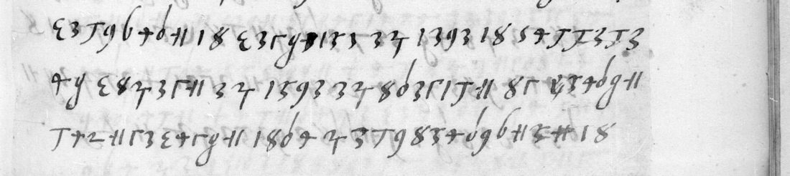

At a glanceKnown key applied · partial (97% of the cipher)
- The letter
- Ambrogio Bizozola to Maximilian Sforza, Bologna, November 1529 (catalogue item 176).
- Where
- BnF fr. 3034 f. 156r, no. 69 (Gallica ark btv1b90600370, views 246–251). DECODE has it as “Non-decrypted”.
- The cipher
- One invented sign per letter; Lasry left five signs unknown. The text forced a few homophones, and one sign is a line-end filler.
- How it was read
- Lasry’s key table, signed 5 November 2023 on Tomokiyo’s page, decrypted the transcribed lines to Italian at once; a second pass at double scale settled the doubtful lines.
- What it says
- The Emperor’s council discussed dividing the state of Milan, and Charles V is at the Certosa, with “tomorrow is the entry” into Bologna.
- Still open
- 54 of 1,907 signs, among them the numerals of the date line.
- Credit
- George Lasry (key); S. Tomokiyo (page).

01 The letter and the key
The letter is no. 69 of fr. 3034, one of the Montmorency volumes of Italian despatches. It fills ff. 156r–157v. The salutation, the closing (D. V. Ill.ma Ex.tia … sig.ria) and the signature (Humil.e Ser.or Ambrosio Bizozola) are in clear, and everything else is in cipher. The address is on the following leaf: Allo Ill.mo et Ex.mo Principe Il S. Maximiliano Sforza … patron suo osser.mo … In Franza, Ala Corte. DECODE dates it 1520/1529. The clear parts carry no date. The cipher does: the last lines read Bologna, quattro del … novembre, and the letter describes the eve of the Emperor’s entry into the town. Charles V entered Bologna on 5 November 1529, so the letter is of 4 November 1529. The year is inferred, not written.
Lasry’s table gives one sign for each letter: A ʒ, B 7, C a 9 with a tail, D 1, E ꝗ, F ʃ, G 2, H 6, I 8, L ʓ, M ε, N Γ, O 11, P a tall cross, Q Ꝗ, R a T-shaped stroke, S ɗ, T and V two further signs. Words are separated by spaces. The text adds four refinements. A long-looped sign that is not drawn in the table as published stands for t, as molte, intese and rotta require. ʒ is used for u as well as a (aolte = volte, daca = duca). The long s is used for f and for s (fatti, consiglio). In the postscript a small cross stands for e. Lasry’s “unknown” ꝏ occurs only at the ends of lines, where a word runs on (al duca ꝏ / di Savoia), so it is a filler. Two or three other unknown signs occur only in the date line and are probably its numerals.
02 The decipherment
f. 156r, normalised; square brackets mark stretches not yet secure.
Per le mie ultime di Cremona et far[..] [ꝏ] e de qui [..] intese molte cose de le actione de misere [..] i figli[..], come sono passato li [..] con lo imperatore, et che molte volte si è misso ogni cosa in rotta. Qua ho saputo per uno omo degno di fede che per questi rumori che il consiglio del imperatore più volte hanno fatti di grandi discorsi sopra il ducato [..], dicendo che [..] Francesco [..] uno altro [..] di fare molte parte dil stato: al duca [ꝏ] di Savoia, al marchese di Monferrato, al marchese di Mantua, al duca di Ferrara, et Milano al duca Alisandro; in questo ragionamento dise l’arciepiscopo di Baro: meglio io seria darlo al duca Maximiliano, che di ragione li viene …
(f. 156v, ll. 13–17) … domane sarà l’intrata. Non di meno oggi li è andato incontra tutti li cardinali et ambassatori; quello di Venecia et de Milano hanno parlato [a] Sua Maiestà cossì a cavallo.
(postscript, f. 157v) Sono molti giorni non ho vostre littere; avere il recepto di questa …
The rest of f. 156v weighs whether Duke Francesco would have to be satisfied and what his brother should have, and says that the writer has written to the Pope. f. 157r concerns “misere Iulio”, a negotiation together with the Venetians, waiting to see whether the duke will come, Trivulzio, and the promise of a cardinal’s hat. f. 157v hopes that the affair of misere Iulio will pass into the Pope’s power, mentions ten thousand scudi of income a year, and ends with the date line. The decoder output, line by line, is reading_raw.txt in the repository.
In English, f. 156r: “By my last from Cremona … Here I have learned from a man worthy of faith that the Emperor’s council has several times held great discussions about the duchy … of making many parts of the state: to the Duke of Savoy, to the Marquis of Monferrato, to the Marquis of Mantua, to the Duke of Ferrara, and Milan to the duke …; in this discussion the Archbishop of Bari said … I believe that if this were done, Duke Francesco would have to be satisfied …”

03 Method
A grep of Tomokiyo’s saved page for “3034” turned up the section and Lasry’s key image. The Gallica SRU query dc.source adj "Français 3034" returned the volume, and a contact sheet of views 240–251 located the letter. The full-resolution natives were cut into lines by a horizontal ink projection. Each line was transcribed by eye into shape codes (codes.txt), and decode.py applied the key. The homophones listed above came from words that the plain table left one letter off.
04 What remains
- The numerals in the date line (f. 157v ll. 9–10): three signs with no second occurrence.
- About 35 signs in four lines (listed in
doubtful.txt) that do not resolve on the Gallica scan. - Confirmation: Sanuto’s Diarii for November 1529 should record the partition talk and the ambassadors’ meeting with the Emperor.
Full texts
The transcription and the decryption of every document on this page, so that the reading can be used and checked. Short files are shown here; all are in the repository.
BnF fr. 3034 ff. 156r-157v, Bologna, 4 November 1529 read in part
Ambrogio Bizozola reports to Maximilian Sforza, then in France, that the Emperor's council has several times discussed dividing the state of Milan among the Duke of Savoy, the Marquises of Monferrato and Mantua and the Duke of Ferrara, and whether Duke Francesco would have to be satisfied. The Emperor is at the Certosa outside Bologna, with his entry the next day (Charles V entered Bologna on 5 November 1529); the letter also deals with misere Iulio, Trivulzio and Alessandro Attavante.
Builds coherent sentences, but under the read bar of 95% of words read as sense (93% here); the holes are marked in the reading.
Transcription
# code legend: + P, q E(ꝗ), J R, z L(ʓ), e M(ε), 8 I, 3 A(ʒ), g T(long-loop), c C(short 9), 1 D, o O(11), n N(Γ), f F(ʃ), 7 B, w ꝏ unknown, d S(ɗ), 6 H, 2 G, Q Q, t T-glyph(key), v V-glyph, 5 unclear s-like, ? illegible, X Lasry-unknown sign (ρ etc.), w ꝏ line-end filler 246_01 +qJ zq q e8q 3zg8eq 18cJq eon3q g f3J73J w 246_02 q 1q Q58 35qJqgq 8ngqdq eozgq codq 18co 246_03 1q zq 3c8onq 1q e8dqJq 8fz8o coeo dono 246_04 +3dd3go z8 do58 n82oc8 con zo 8e+qJ3goJq 246_05 qgc6q eozgq 3ozgq d8q e8do o2n83 cod3 246_06 8n Jogg3 Q53 o d3+5go +qJ 5no oeo 1q2no 246_07 1q2no 18 fq1q c6q +qJ +qJ Q5qdg8 Jog5J8 246_08 c6q 8z conf82z8o 1qz 8e+qJ3goJq 246_09 +855ozgq 3nnof3gg8 18 2J3n18 18dcoJc 246_10 do+J3 8z 13c3go 18 e8z3no 18cqn1o c6q 246_11 8z 13c3 fJ3ncqdco nq2oc835 3 eo3Z no1o eo 246_12 1o eo 3 5no 3zgJo 18dco J+n1o 18ddqno 1q 246_13 f3Jq eozgq +3Jgq 18z dg3go 3z 15c3 w 246_14 18 d35o83 3z e3Jc6qdo 18 eonfqJJ3go 3z 246_15 e3Jc6qdo 18 e3ng513 3z 13c3 18 fqJJ3J3 246_16 qg e8z3no 3z 15c3 3z 8 d3n1Jo 8n Q5qdgo 246_17 Jq2on3eqngo 18dq z3Jc83+qdc6oz5o18 247_01 73Jo eq2z8o 8o dqJ8313Jzo 3z 15c3 e3o8e8z w 247_02 3no c6q 18 J+2 8onq z83qnq 3no3zgJo 18 247_03 dq cJ+1o cq Jgo dq Q5qdgo d8 f3dqddq 247_04 c6q 8z 15c3 fJ3ncqdco 68 3con gqngJ3Jq 247_05 c6q 8z fJ3gqzzo z35qddq 3nno 3zgJo 247_06 J8dqodgo c6q eq2z8o d3Jq7q 353Jnq 249_ps1 dono eozg8 28oJn8 non o 3odgJ+ z8gqJ+ 249_ps2 35+J+ 8z Jq cq+go 18 Q5+dg3 fgq 247_07 +3Jg8g3 con fJ3nZ3 qg fqcqno f8no 3z 247_08 +3Jz3Jq 8n Q5qdg3 3zg8e3 Jog53 J3cqdo 247_09 Jo 3dcJ8ggo 3z +3+3 c6q +qnd8 d3Jq 247_10 3zgJo 15co 18 e8z3no c6q 8z 15c w 247_11 fJ3ncqdco cqddqJo Q3qdg3 dqJ3 q 28ongo 247_12 3z 3cqJgod3 c6q q q35no e82z8o 13 Q5qdgo 247_13 gqJJ3 1o e3nq d3J3 z8ngJ3g3 non1eqno 247_14 o28 z8 q 3n13go 8n congJ3 g5gg8 z8 c3J 247_15 18n3z8qg 3e73dd3goJ8 Q5qzzo 18 247_16 5qnqc83 qg 1q e8z3no 3no +3Jz3go 247_17 d53 e38og3 coddi 3c353zzo 248_01 +qJ 18o2J3c83 53n3 3zgJ3 5ozg3 d8q 3g3c3 248_02 gozg3 +J3g8c3 18 e8 e8dqJq 85z8o qgdq 248_03 nq2oc83J3 8nd8eq con 5qn8c83n8 d8 248_04 dq+qJ3 eozgo c6q z3 cod3 1q 78Jq 5o8Jq 248_05 8n 7qnq 8odgo Q533 3d+qg3J3 dqz 15c3 248_06 35qJ3 35qn8Jq Q533 o no ? 248_07 ogJo53go e8dqJq 3zqd3n1Jo 3g353ngq 248_08 qg 8z zo78no Q3z d3 8z d+ qn18goJq 248_09 1qz Jq3q Jqn18d8eo gJ85zg8o d8nq 248_10 3g3ngo 3783 5odgJ8 J8 358do odo +3go +qJ 248_11 58d1q e8dqJq d8f8onq c6q con c8 3n1o z3 248_12 cod3 18 e8dqJq 85z8o dq z8 13J3 e3z8 248_13 qJq qgcJqdo dqJ3 Q3q zz3 1on23J8 w 248_14 qg c6q d57go 5o83 835qJqgq 8z c3+qzzo 248_15 Jodo o f3go 8ngqn1qJq 3z3g353ngq 8n 248_16 1qcoJdq f3 f3ggo +qJ 8z conf82z8o 1q 248_17 cqddqJo +qJ o dq z3 e3z3 doJgq 5ozqddq 248_18 c6q z3 cod3 18 e8dqJq 8z8o non 249_01 Jq3dd8oq 8n 7qnq qg c6q 53ddq 8n +ogqJq 249_02 18z +3+3 1q qzqzqJq 3zgJ8 5o2z8 w 249_03 gqn8Jnq Q53zc6q +Jq+odgo con e8dqJq 249_04 83co7o d3z583g8 c6q Q53n1o z3 codd3 no 249_05 Jq5odq con e8dqJq 85z8o 5o2z83 +3Jz3 249_06 Jq 3z +3+3 +qJ 5o8 qg c6q dq z3 249_07 codd3 3nnqddq 3Jq3 d8Jq c6q z8 +Joeq 249_08 gg3 1qc3 e8z8 dc5g8 18 8ngJ3g3 z3nno 249_09 Xq nq 3zgJo 7ozo2n3 Q3gJo 1qz 249_10 z8ngqno15q XXX no5qe7Jq
Decryption
246_01 per le e mie altime dicre monae t farbar - 246_02 e de qui auerete intese molte cose dico 246_03 de le acione de misere iflio como sono 246_04 passato li soui nigoci con lo imperatore 246_05 etche molte aolte sie miso ognia cosa 246_06 in rotta qua o saputo per uno omo degno 246_07 degno di fede che per per questi roturi 246_08 che il configlio del imperatore 246_09 piuuolte annofatti di grandi discorc 246_10 sopra il dacato di milano dicendo che 246_11 il daca francesco negociau a moaz nodo mo 246_12 do mo a uno altro disco rpndo disseno de 246_13 fare molte parte dil stato al duca - 246_14 di sauoia al marcheso di monferrato al 246_15 marcheso di mantuda al daca di ferrara 246_16 et milano al duca al i sandro in questo 246_17 regonamento dise larciapescholuodi 247_01 baro meglio io seriadarlo al duca maoimil - 247_02 ano che di rpg ione liaene anoaltro di 247_03 se crpdo ce rto se questo si fasesse 247_04 che il duca francesco hi acon tentrare 247_05 che il fratello lauesse anno altro 247_06 riseosto che meglio sarebe auarne 249_ps1 sono molti giorni non o aostrp literp 249_ps2 auprp il re cepto di qupsta fte 247_07 partita con franza et feceno fino al 247_08 parlare in questa altima rotua raceso 247_09 ro ascritto al papa che pensi sare 247_10 altro duco di milano che il duc - 247_11 francesco cessero qaesta sera e gionto 247_12 al acertosa che e eauno miglio da questo 247_13 terra do mane sara lintrata nondmeno 247_14 ogi li e andato in contra tutti li car 247_15 dinaliet ambassatori quello di 247_16 uenecia et de milano ano parlato 247_17 sua maiota cossi acauallo 248_01 per diogracia uana altra uolta sie ataca 248_02 tolta pratica di mi misere iulio etse 248_03 negociara insime con ueniciani si 248_04 sepera molto che la cosa de bire uoire 248_05 in bene iosto quaa aspetara sel duca 248_06 auera auenire quaa o no ? 248_07 otrouato misere alesandro atauante 248_08 et il lobino qal sa il sp enditore 248_09 del reae rendisimo triultio sine 248_10 atanto abia uostri ri auiso oso pato per 248_11 uisde misere sifione che con ci ando la 248_12 cosa di misere iulio se li dara mali 248_13 ere etcreso sera qae lla dongari - 248_14 et che subto uoia iauerete il capello 248_15 roso o fato intendere alatauante in 248_16 decorse fa fatto per il configlio de 248_17 cessero per o se la mala sorte uolesse 248_18 che la cosa di misere ilio non 249_01 reassioe in bene et che uasse in potere 249_02 dil papa de elelere altri uogli - 249_03 tenirne qualche preposto con misere 249_04 iacobo saluiati che quando la cossa no 249_05 reuose con misere iulio uoglia parla 249_06 re al papa per uoi et che se la 249_07 cossa annesse area sire che li prome 249_08 tta deca mili scuti di intrata lanno 249_09 <?>e ne altro bologna qatro del 249_10 lintenodue <?><?><?> nouembre
Reading
# Ambrogio Bizozola to Maximilian Sforza, Bologna, 4 November 1529 (BnF fr. 3034 ff. 156r-157v): reading
Rests on: the sign transcription `codes.txt` (all 66 lines, second pass at double scale) and Lasry's key as extended
here (`decode.py`, output `reading_raw.txt`). This file is the word-divided reading of that output, written for the v3
verification (23 Oct 2026). Rules:
- The key's own homophones are resolved by sense: the sign ʒ is a and u/v ("aolte" volte, "dacato" ducato, "qaesta"
questa), the long s is f and s ("configlio" consiglio, "sare" fare). These are the figure's own values.
- Where the sense needs a letter the figure does not have (the tall cross p where e is wanted, "crpdo" credo; the
small cross is e only in the postscript, where it is read e), the word is marked [?word]: the tall/small cross is a
look-alike pair, so these words rest on the alternate.
- The writer's spelling is kept as the figures give it (soui, nigoci, regonamento, Mantuda, duco, maiota, Cessero =
Cesare, the Emperor); it is not modernised.
- The stretches listed in `doubtful.txt` are [...]; words the figures give but that do not resolve are [word] (a
hole); [x] around letters the sense needs and nothing carries.
- The postscript (249_ps1-2, written on f. 157v beside the text) is placed at the end.
## Reading
Per le e mie ultime di Cremona e [t farbar], e de qui averete intese molte cose. Dico de le acione de misere
[?Iulio], como sono passato li soui nigoci con lo imperatore, et che molte volte si e miso ognia cosa in rotta.
Qua o saputo per uno omo degno degno di fede, che per per questi [roturi], che il consiglio del imperatore piu volte
anno fatti di grandi discorc[i] sopra il ducato di Milano, dicendo che il duca Francesco negociava [...] a uno altro.
[?Discorendo] disseno de fare molte parte dil stato: al duca di Savoia, al marcheso di Monferrato, al marcheso di
Mantuda, al duca di Ferrara, et Milano al duca Alisandro. In questo regonamento dise l'arciapescho [luo] di Baro:
meglio io seria darlo al duca [?Maximiliano], che di [?ragione] li vene. Uno altro disse: [?credo] certo, se questo si
fasesse, che il duca Francesco hi a [contentrare] che il fratello l'avesse. Anno altro [?risposto], che meglio sarebe
[avarne] partita con Franza; et feceno fino al parlare in questa ultima [...] a scritto al papa che pensi fare altro
duco di Milano che il duca Francesco.
Cessero questa sera e gionto a la Certosa, che e [ea] uno miglio da questo terra; domane sara l'intrata. Nondmeno ogi
li e andato incontra tutti li cardinali et ambassatori, quello di Venecia et de Milano; ano parlato [a] sua maiota
cossi a cavallo.
Per Dio gracia una altra volta si e ataca[...] pratica di mi misere Iulio, et se negociara insime con Veniciani. Si
sepera molto che la cosa de[...] in bene. Io sto qua a aspetara s'el duca avera a venire qua o no.
O trovato misere Alesandro Atavante et il Lobino, [qal] sa il spenditore del reverendisimo Triultio. Sin e atanto
abia vostri [ri] aviso, o so[?] pato per vis de misere [sifione], che con ci ando la cosa di misere Iulio se li dara
[mali ere], et creso sera [qaella] dongari, et che subto voi a iaverete il capello roso. O fato intendere al Atavante
in decorse fa fatto per il consiglio de Cessero per o se la mala sorte volesse che la cosa di misere [?Iulio] non
reassi[o]e in bene, et che vasse in potere dil papa, de elelere altri vogli tenirne qualche preposto con misere
Iacobo Salviati, che quando la cossa no reuose con misere Iulio, voglia parlare al papa per voi; et che se la cossa
annesse a rea sire, che li prometta deca mili scuti di intrata l'anno [...] e ne altro.
Bologna, quatro del [...] novembre.
Postscript: Sono molti giorni non o vostre litere, avere il recepto di questa [fte].Translation
<!-- English translation of texts/f156_reading.md (Claude Opus 5.5, 23 Oct 2026), sentence for sentence, with the same holes: [...] unread; [word] a word the figures give that does not resolve (kept untranslated); [?word] partly carried. The last paragraph but one is the least secure in the reading and the translation stays close to its words. --> # Ambrogio Bizozola to Maximilian Sforza, Bologna, 4 November 1529 (BnF fr. 3034 ff. 156r-157v): English translation By my last letters from Cremona and [t farbar], and from here, you will have heard many things. I speak of the doings of Messer [?Giulio], how his affairs with the Emperor have gone, and that many times everything was broken off. Here I have learned from a man worthy of trust that, because of these [roturi], the Emperor's council has several times held great discussions about the duchy of Milan, saying that Duke Francesco was negotiating [...] with another. [?Discussing] it, they spoke of making many parts of the state: to the Duke of Savoy, to the Marquis of Monferrato, to the Marquis of Mantua, to the Duke of Ferrara, and Milan to Duke Alessandro. In this discussion the Archbishop [luo] of Bari said: it would be better to give it to Duke [?Massimiliano], to whom it comes by [?right]. Another said: I [?believe] for certain that, if this were done, Duke Francesco would [contentrare] that his brother should have it. Others [?answered] that it would be better to [avarne] share with France; and they went as far as speaking in this last [...] has written to the Pope that he should think of making another Duke of Milan than Duke Francesco. The Emperor arrived this evening at the Certosa, which is [ea] a mile from this town; tomorrow will be the entry. Nevertheless today all the cardinals and ambassadors, those of Venice and of Milan, went out to meet him; they spoke to His Majesty thus on horseback. By God's grace the negotiation of Messer Giulio has once more been taken up, and it will be negotiated together with the Venetians. It is much hoped that the matter will [...] well. I am staying here to wait whether the Duke will have to come here or not. I have found Messer Alessandro Atavante and Lobino, [qal] knows the steward of the Most Reverend Trivulzio. Until you have your [ri] notice, I [?] through Messer [sifione] that, with whom the matter of Messer Giulio went, he will be given [mali ere], and I believe it will be [qaella] dongari, and that you will at once have the red hat. I gave Atavante to understand in discourse [what] was done by the Emperor's council, so that, if ill luck willed that the matter of Messer [?Giulio] did not turn out well and it went into the Pope's power, of elelere others, you would wish to keep some provost with Messer Iacopo Salviati, so that, when the matter does not succeed with Messer Giulio, he will speak to the Pope for you; and that if the matter should go badly, he should promise him ten thousand scudi of income a year [...] and nothing else. Bologna, the fourth of [...] November. Postscript: For many days I have had no letters from you; [I would like to] have the receipt of this [fte].
Key: tomokiyo_key.png, key.md

05 Sources
- BnF, Français 3034, ff. 156–158: Gallica btv1b90600370, views 246–251.
- DECODE R4224 (images behind login).
- George Lasry, key table “BNF Francais 3034-156 Italian”, 5 November 2023, shown on S. Tomokiyo, cryptiana, GL.htm.
Transcription, key notes and decoder: targets/bizozola1520/ in the repository.